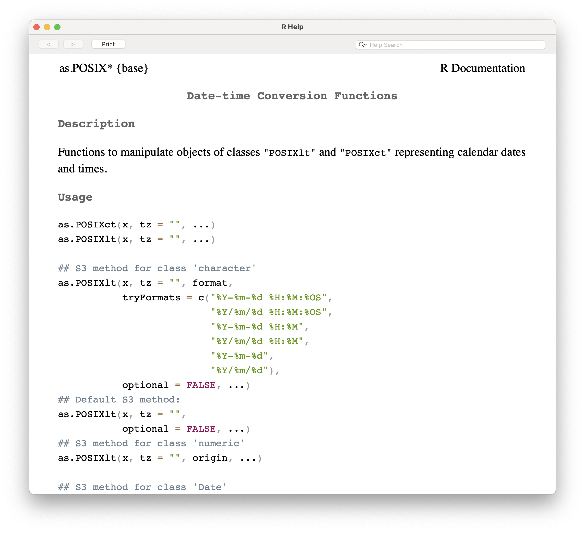
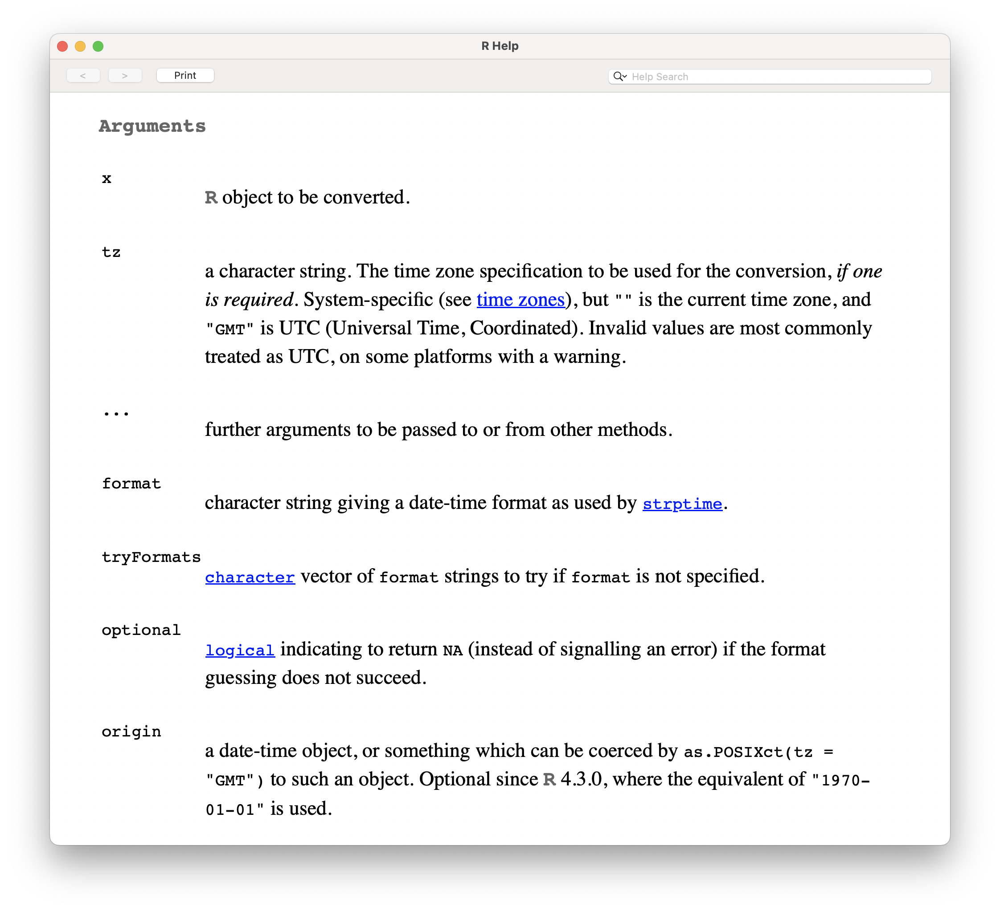
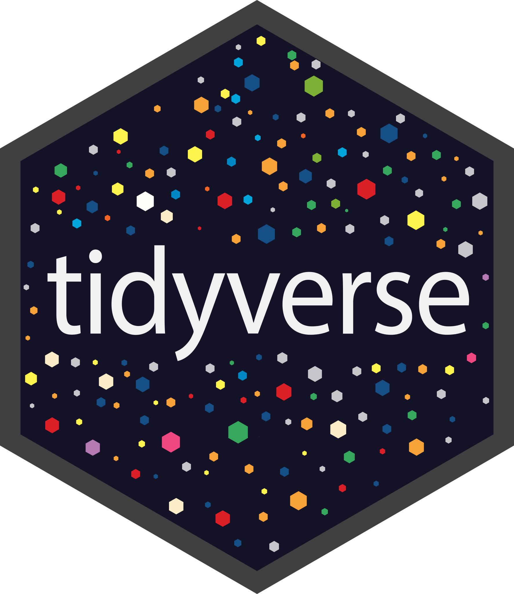
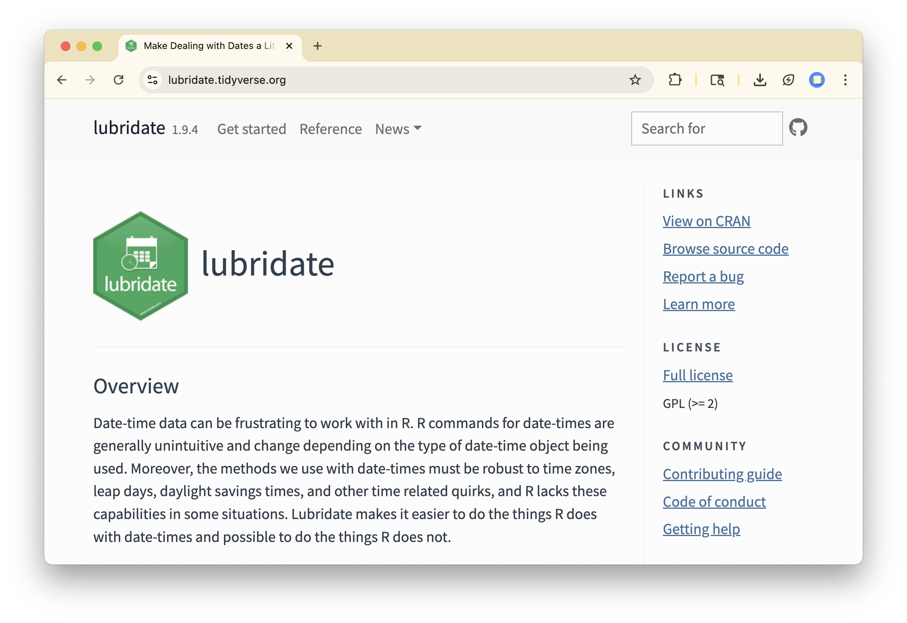

Dates and Times I
Storing, creating, displaying, and converting time.
Last Time
- Shortcut classes name common sets like digits.
- Anchors pin a pattern to the start or end.
- Grouping sets the scope of a quantifier.
- Alternation matches one pattern or another.
Key Ideas for Today
- A date-time counts seconds since 1970 (Unix time).
- Parsing turns text into a date-time.
- Getters and setters read and change its parts.
- Some parts, like months, are circular.
What are the results of the following operations?
01:00
Agenda
- How does a computer Store dates and times?
- How do we Create dates and times?
- How do we Get and Set them?
Storing
Unix Time
A method to measure time as the number of seconds1 that have elapsed since midnight UTC on 1 January 1970, the Unix epoch.
| Date Time (UTC) | Unix Time |
|---|---|
| 12:01 am Jan 1, 1970 | 60 |
Unix Time
A method to measure time as the number of seconds1 that have elapsed since midnight UTC on 1 January 1970, the Unix epoch.
| Date Time (UTC) | Unix Time |
|---|---|
| 12:01 am Jan 1, 1970 | 60 |
| 12:01 am Jan 2, 1970 | 86460 |
Unix Time
A method to measure time as the number of seconds1 that have elapsed since midnight UTC on 1 January 1970, the Unix epoch.
| Date Time (UTC) | Unix Time |
|---|---|
| 12:01 am Jan 1, 1970 | 60 |
| 12:01 am Jan 2, 1970 | 86460 |
| 7 pm Oct 14, 2026 (today at noon) | 1792004400 |
Unix Time
A method to measure time as the number of seconds1 that have elapsed since midnight UTC on 1 January 1970, the Unix epoch.
| Date Time (UTC) | Unix Time |
|---|---|
| 12:01 am Jan 1, 1970 | 60 |
| 12:01 am Jan 2, 1970 | 86460 |
| 7 pm Oct 14, 2026 (today at noon) | 1792004400 |
| 5:55 pm Dec 7, 1941 | −8993325700 |
POSIXct
POSIXct (Portable Operating System Interface Calendar Time) is an atomic vector to store date-times that is built on top of a double vector.
Why not just use a double vector?
Date
A simpler vector than POSIXct that stores date data without times. Created with as.Date().
Creating
Creating date-time vectors
Use as.POSIXct() to create a date-time vector from a numeric (in Unix Time) or a string in a particular format.


Creating date-time vectors
Use as.POSIXct() to create a date-time vector from a numeric (in Unix Time) or a string in a particular format.
[1] "1970-01-01 00:01:00 UTC"[1] "1970-01-01 00:01:00 UTC"

Creating with lubridate
lubridate() has many functions that can parse the year (y), month (m), day (d), hour (h), minute (m), and second (s) components of a date-time string.
Your Turn
Question: Which lubridate function parses each string?
"14 October 2026""10/14/26 9:00""2026-10-14 12:00:00"
01:00
Parsing each string
[1] "2026-10-14"Getting and Setting
Getting
You can extract components of the date-time object using year(), month(), week(), day(), wday(), hour(), etc.
Getting
You can extract components of the date-time object using year(), month(), week(), day(), wday(), hour(), etc.
[1] Fri
Levels: Sun < Mon < Tue < Wed < Thu < Fri < SatGetting
You can extract components of the date-time object using year(), month(), week(), day(), wday(), hour(), etc.
[1] Friday
7 Levels: Sunday < Monday < Tuesday < Wednesday < Thursday < ... < SaturdaySetting
You can set those same components in an existing date-time object using change-in-place notation.
Your Turn
Question: Write the (lines) of code necessary to determine:
- On which day of the week will New Years Eve fall this year?
- What day of the week was US Independence Day?
- Bonus What was the corresponding Unix time?
02:00
Your Turn: Solutions
[1] Thursday
7 Levels: Sunday < Monday < Tuesday < Wednesday < Thursday < ... < SaturdayYour Turn: Bonus Solution
[1] 20638Circular Data
Example: Circular Data
What is the average month of these observations?
# A tibble: 6 × 2
month year
<dbl> <dbl>
1 2 2026
2 1 2026
3 2 2026
4 11 2025
5 12 2025
6 12 2025Example: Circular Data
What is the month of the average of these dates?
# A tibble: 6 × 3
month year datetime
<dbl> <dbl> <dttm>
1 2 2026 2026-02-15 00:00:00
2 1 2026 2026-01-15 00:00:00
3 2 2026 2026-02-15 00:00:00
4 11 2025 2025-11-15 00:00:00
5 12 2025 2025-12-15 00:00:00
6 12 2025 2025-12-15 00:00:00Example: Circular Data
What is the month of the average of these dates?
# A tibble: 1 × 1
avg_datetime
<dttm>
1 2026-01-04 20:00:00Example: Circular Data
What is the month of the average of these dates?
# A tibble: 1 × 2
avg_datetime mon_of_avg
<dttm> <dbl>
1 2026-01-04 20:00:00 1Guess the Metaphor
A date-time is like a giant sundial: underneath it’s a single measurement, how far the shadow has travelled from a fixed origin, but we read it off the dial as hours and days. And like the dial, some parts wrap around: December sits right next to January.
Key Ideas for Today
- A date-time counts seconds since 1970 (Unix time).
- Parsing turns text into a date-time.
- Getters and setters read and change its parts.
- Some parts, like months, are circular.
For Next Time
- Sign up for Quiz 4 (10/19-10/20) on PrairieTest.
- Work on PS 4, due Saturday 10/17 at 11:59 pm.
- Do Project 3 now and ask for help.